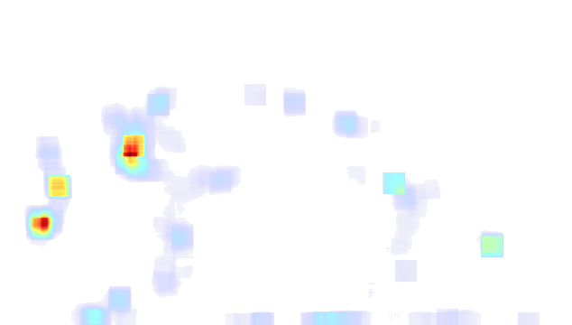

Visión omnicanal
El recorrido del cliente · una experiencia fluida en todos los canales
Las dos iniciativas conectan los canales- App móvil pedidos y puntos
- Web / e-commerce catálogo y compra
- IA Tienda física tráfico y surtido
- Entrega / Click & Collect retiro y envío
- Fidelización beneficios y recompra
Iniciativa A · Base
Manual de Ética y Gobernanza
Unifica el dato del cliente, el consentimiento y la confianza. Es lo que hace posible una vista única del cliente en los 5 canales.
Dato unificadoConsentimientoLey 7593/2025
Iniciativa B · Canal físico
Visión IA en tienda · mapa de calor
El tráfico y la permanencia en el piso alimentan el surtido online y habilitan Click & Collect: cierra el bucle online ↔ tienda.
Dos iniciativas, un mismo recorrido del cliente: la base de gobernanza habilita los 5 canales y la visión en tienda cierra el bucle online ↔ tienda.
01 · Fase 0
Manual de Ética y Gobernanza
1 mes (30 días) · antes de tocar un solo datoGATE
Regla: ningún dato se procesa con IA en Cadena Real hasta que el caso de uso apruebe la evaluación ética y de cumplimiento. El manual no frena el trabajo: es la llave que lo habilita sin exponer a la empresa.
Cómo se construye · 30 días
01días 1–7
Diagnóstico
inventario de datos y casos de uso
02días 8–15
Borrador
principios y políticas de retención
03días 16–23
Revisión
riesgo por caso de uso y roles
04días 24–30
Aprobación
comité firma y habilita el gate
Principios del manual
Transparenciacómo y para qué se usan los datos
Privacidad por diseñominimización y retención
Equidad y sesgoauditoría de sesgos por modelo
Explicabilidadla IA propone, no es caja negra
Humano en el bucledecisión final: negocio
Rendición de cuentasroles y comité de aprobación
Alcance Grupo: un mismo manual para todas las unidades — Embotelladora Central, cerveceras y Cadena Real. Las reglas se documentan una vez y cualquier departamento sabe cómo se trabaja la IA en la empresa. Aplica a todo el Grupo.
Conexión omnicanal: el dato unificado y el consentimiento son la base para una vista única del cliente entre app, web, tienda y fidelización.
02 · Piloto 90 días
Visión IA en tienda
mapa de calor del recorrido · 2 tiendas pilotoMapa de calor en tiempo real: personas trackeadas y acumulación de tráfico sobre el piso (YOLOv8 + ByteTrack). Salida real del detector · clip de 22 s de una muestra de 110.9 s.
30 f/s
inferencia
2
tiendas piloto
3
zonas monitoreadas

BajoAlto
89
personas
6.3 s
permanencia media
55%
tráfico en pasillo
Mapa de calor acumulado — datos reales del video (110.9 s · 89 personas · 3 zonas por ancho de cuadro).
RECORRIDO
Datos reales del video: el pasillo concentra 55% de la ocupación media (pico 6 personas), mostrador 26% y entrada 19%; permanencia media de 6.3 s sobre 89 personas. Insumo para reubicar promociones y surtido.
Datos reales del video: el pasillo concentra 55% de la ocupación media (pico 6 personas), mostrador 26% y entrada 19%; permanencia media de 6.3 s sobre 89 personas. Insumo para reubicar promociones y surtido.
OMNICANAL
El tráfico y el stock en tienda alimentan el surtido online y habilitan Click & Collect: cierra el bucle online ↔ tienda.
El tráfico y el stock en tienda alimentan el surtido online y habilitan Click & Collect: cierra el bucle online ↔ tienda.
GOBERNANZA
El tráfico se mide de forma anónima y agregada (densidad de recorrido), sin identificación facial ni seguimiento individual — consistente con el manual.
El tráfico se mide de forma anónima y agregada (densidad de recorrido), sin identificación facial ni seguimiento individual — consistente con el manual.
ROI PILOTO
Layout y surtido optimizados con datos de tráfico: la primera IA visible del Grupo en el piso de tienda, medible y anónima.
Layout y surtido optimizados con datos de tráfico: la primera IA visible del Grupo en el piso de tienda, medible y anónima.
Video: salida real del detector de visión por computadora (YOLOv8 + ByteTrack). Plano: interpretación del recorrido. Todo offline, sin conexión.